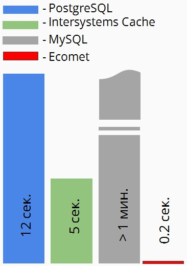
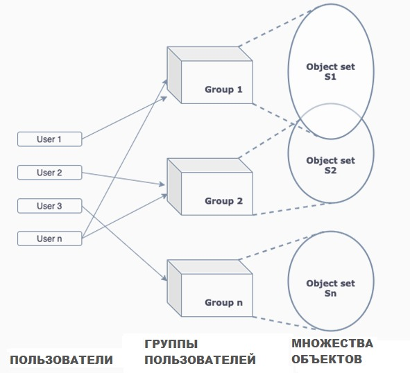
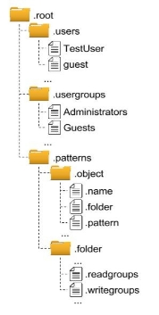
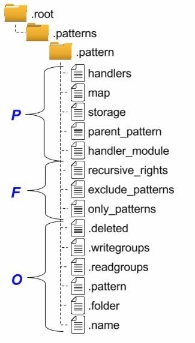

<!DOCTYPE html SYSTEM "about:legacy-compat">
<html lang="en-US" data-preset="contrast" data-primary-color="#307FFF"><head><meta http-equiv="Content-Type" content="text/html; charset=UTF-8"><meta charset="UTF-8"><meta name="robots" content="noindex"><meta name="built-on" content="2024-06-17T12:30:55.516411685"><title>Ecomet (СУБД) | Faceplate docs</title><script type="application/json" id="virtual-toc-data">[{"id":"t5dwse_187","level":0,"title":"Настройка и работа с базой данных","anchor":"#t5dwse_187"},{"id":"t5dwse_212","level":0,"title":"Скорость","anchor":"#t5dwse_212"},{"id":"t5dwse_223","level":0,"title":"Управление правами пользователей","anchor":"#t5dwse_223"},{"id":"t5dwse_237","level":0,"title":"Логическая организация данных","anchor":"#t5dwse_237"}]</script><script type="application/json" id="topic-shortcuts"></script><link href="https://resources.jetbrains.com/writerside/apidoc/6.10.0-b259/app.css" rel="stylesheet"><meta name="msapplication-TileColor" content="#000000"><link rel="apple-touch-icon" sizes="180x180" href="https://jetbrains.com/apple-touch-icon.png"><link rel="icon" type="image/png" sizes="32x32" href="https://jetbrains.com/favicon-32x32.png"><link rel="icon" type="image/png" sizes="16x16" href="https://jetbrains.com/favicon-16x16.png"><meta name="msapplication-TileImage" content="https://resources.jetbrains.com/storage/ui/favicons/mstile-144x144.png"><meta name="msapplication-square70x70logo" content="https://resources.jetbrains.com/storage/ui/favicons/mstile-70x70.png"><meta name="msapplication-square150x150logo" content="https://resources.jetbrains.com/storage/ui/favicons/mstile-150x150.png"><meta name="msapplication-wide310x150logo" content="https://resources.jetbrains.com/storage/ui/favicons/mstile-310x150.png"><meta name="msapplication-square310x310logo" content="https://resources.jetbrains.com/storage/ui/favicons/mstile-310x310.png"><meta name="image" content=""><!-- Open Graph --><meta property="og:title" content="Ecomet (СУБД) | Faceplate docs"><meta property="og:description" content=""><meta property="og:image" content=""><meta property="og:site_name" content="Faceplate docs Help"><meta property="og:type" content="website"><meta property="og:locale" content="en_US"><meta property="og:url" content="writerside-documentation/ecomet-субд.html"><!-- End Open Graph --><!-- Twitter Card --><meta name="twitter:card" content="summary_large_image"><meta name="twitter:site" content=""><meta name="twitter:title" content="Ecomet (СУБД) | Faceplate docs"><meta name="twitter:description" content=""><meta name="twitter:creator" content=""><meta name="twitter:image:src" content=""><!-- End Twitter Card --><!-- Schema.org WebPage --><script type="application/ld+json">{
    "@context": "http://schema.org",
    "@type": "WebPage",
    "@id": "writerside-documentation/ecomet-субд.html#webpage",
    "url": "writerside-documentation/ecomet-субд.html",
    "name": "Ecomet (СУБД) | Faceplate docs",
    "description": "",
    "image": "",
    "inLanguage":"en-US"
}</script><!-- End Schema.org --><!-- Schema.org WebSite --><script type="application/ld+json">{
    "@type": "WebSite",
    "@id": "writerside-documentation/#website",
    "url": "writerside-documentation/",
    "name": "Faceplate docs Help"
}</script><!-- End Schema.org --></head><body data-id="Ecomet-СУБД" data-main-title="Ecomet (СУБД)" data-article-props="{&quot;seeAlsoStyle&quot;:&quot;links&quot;}" data-template="article" data-breadcrumbs=""><div class="wrapper"><main class="panel _main"><header class="panel__header"><div class="container"><h3>Faceplate docs  Help</h3><div class="panel-trigger"></div></div></header><section class="panel__content"><div class="container"><article class="article" data-shortcut-switcher="inactive"><h1 data-toc="Ecomet-СУБД" id="Ecomet-СУБД.md">Ecomet (СУБД)</h1><p id="t5dwse_185">Ecomet - это СУБД для real-time приложений.</p><p id="t5dwse_186">Ecomet предлагает встроенную модель управления правами пользователей и поддержку защищенных подключений через Secure WebSocket, что позволяет обеспечить безопасную работу с данными из браузера с использованием JavaScript. Для упрощения задач интеграции в Ecomet реализованы библиотеки на языке JavaScript.</p><section class="chapter"><h2 id="t5dwse_187" data-toc="t5dwse_187">Настройка и работа с базой данных</h2><ul class="list _bullet" id="t5dwse_188"><li class="list__item" id="t5dwse_189"><p>Подключение библиотеки для работы с СУБД:</p></li></ul><div class="code-block" data-lang="bash">
&lt;script src = &quot;lib/js/ecomet.js&quot; type = &quot;text/javascript&quot;&gt;&lt;/script&gt;
</div><ul class="list _bullet" id="t5dwse_191"><li class="list__item" id="t5dwse_192"><p>Работа с API СУБД:</p></li></ul><p id="t5dwse_193"><span class="emphasis" id="t5dwse_194">Создание нового объекта:</span></p><div class="code-block" data-lang="bash">
// Вывод ошибок
OnError = function(ErrText){alert(ErrText);};

// Создание объекта
ecomet.create_object({
    &quot;.name&quot;: &quot;my_object&quot;,                           // имя объекта
    &quot;.folder&quot;: &quot;/root/test_folder&quot;,                 // папка
    &quot;.pattern&quot;: &quot;/root/.patterns/test_pattern&quot;,     // шаблон объекта
    &quot;field1&quot;: &quot;value1&quot;,                             // тестовое поле
    &quot;field2&quot;: 12.34,                                // поле float
}, OnError);
</div><p id="t5dwse_196"><span class="emphasis" id="t5dwse_197">Редактирование объекта:</span></p><div class="code-block" data-lang="bash">
// Редактирование объекта
ecomet.edit_object(&quot;/root/test_folder/my_object&quot;, {
    &quot;field1&quot;: &quot;new value&quot;,      // новый текст 
    &quot;field2&quot;: 34.12,            // новое число
}, OnError);
</div><p id="t5dwse_199"><span class="emphasis" id="t5dwse_200">Удаление объекта:</span></p><div class="code-block" data-lang="bash">
// Удаление объекта
ecomet.delete_object(&quot;/root/test_folder/my_object&quot;, OnError);
</div><p id="t5dwse_202"><span class="emphasis" id="t5dwse_203">Простой запрос:</span></p><div class="code-block" data-lang="bash">
// Поиск объектов
ecomet.find(
    &quot;GET .name, field2 WHERE field1=’new value’ &quot;,  // Запрос
    function(Data){ Result = Data; },          // Получение результата
    OnError);

// Результат (Result)
{ &quot;total&quot;: 1, &quot;set&quot;: [                         // Найдено объектов
    { &quot;oid&quot;: &quot;{58,3}&quot;,                         // идентификатор объекта
        &quot;fileds&quot;: {                            // Запрошенные поля:
        &quot;.name&quot;: &quot;my_object&quot;,                  //   - имя объекта
        &quot;field2&quot;: 34.12 }}]                    //   - поле “field2”
}
</div><p id="t5dwse_205"><span class="emphasis" id="t5dwse_206">Подписка (данные в реальном времени):</span></p><div class="code-block" data-lang="bash">
// Динамическая подписка
ecomet.subscribe(
    &quot;GET .name, field2 WHERE field1=’new value’ &quot;,          // Запрос
    OnCreate,                       // Добавление объекта (в выборку!)
    OnEdit,                         // Редактирование объекта
    OnDelete,                       // Удаление объекта (из выборки!)
    OnError);

// Реакция на добавление объекта в выборку
OnCreate = function(Data){ Result=Data; }

// Реакция на редактирование объекта
OnEdit = function(Data){ Result=Data; }

// Реакция на удаление объекта
OnDelete = function(Data){ Result=Data; }

// Result
{“oid”: “{58,3}”,                   // идентификатор объекта
“fields”: {                         // Запрошенные поля:
    “.name”: “my_object”,           // - имя объекта
    “field2”: 34.12 }}              // - поле “field2”
</div><aside class="prompt" data-type="note" data-title="" id="t5dwse_208"><p id="t5dwse_209"><span class="control" id="t5dwse_210">ВНИМАНИЕ!</span></p><p id="t5dwse_211">При редактировании объекта Result содержит только измененные поля, при удалении - поля пусты.</p></aside></section><section class="chapter"><h2 id="t5dwse_212" data-toc="t5dwse_212">Скорость</h2><p id="t5dwse_213">На больших объемах данных наиболее ресурсоемкими являются операции поиска, группировки и сортировки.</p><p id="t5dwse_214">Ecomet для эффективного решения этих проблем использует индексы и оптимизированные для них алгоритмы в сочетании с технологией распределенного поиска:</p><ul class="list _bullet" id="t5dwse_215"><li class="list__item" id="t5dwse_216"><p><b id="t5dwse_217">Послойная индексация с алгоритмом нисходящего поиска</b> повышает производительность более чем в 20 раз; </p><figure id="t5dwse_218"><a href="FPdocs/Ecomet.1.png" class="lightbox"></a></figure></li><li class="list__item" id="t5dwse_219"><p><b id="t5dwse_220">Подписка на поисковой запрос</b> позволяет получать данные в режиме реального времени;</p></li><li class="list__item" id="t5dwse_221"><p><b id="t5dwse_222">Технология кэширования с возможностью явного определения способа хранения до уровня отдельных полей объекта</b> минимизирует количество обращений к внешней памяти.</p></li></ul></section><section class="chapter"><h2 id="t5dwse_223" data-toc="t5dwse_223">Управление правами пользователей</h2><p id="t5dwse_224">Механизмы разграничения прав пользователей в СУБД Ecomet схожи с системой прав доступа в ОС Linux:</p><ul class="list _bullet" id="t5dwse_225"><li class="list__item" id="t5dwse_226"><p>каждое подключение к базе требует авторизации; каждый процесс,обслуживающий подключение, работает в контексте конкретного пользователя;</p></li><li class="list__item" id="t5dwse_227"><p>пользователи объединяются в группы;</p></li><li class="list__item" id="t5dwse_228"><p>каждый пользователь может быть участником нескольких групп;</p></li><li class="list__item" id="t5dwse_229"><p>каждый объект базы данных имеет системные поля: </p><ul class="list _bullet" id="t5dwse_230"><li class="list__item" id="t5dwse_231"><p><code class="code" id="t5dwse_232">.readgroups</code> - список групп, имеющих право на чтение объекта;</p></li><li class="list__item" id="t5dwse_233"><p><code class="code" id="t5dwse_234">.writegroups</code> - список групп, имеющих право на изменение объекта;</p></li></ul></li><li class="list__item" id="t5dwse_235"><p>каждый объект при создании наследует конфигурацию прав из папки, в которой он создается, если права не определены явно.</p></li></ul><figure id="t5dwse_236"><a href="FPdocs/Ecomet.2.png" class="lightbox"></a></figure></section><section class="chapter"><h2 id="t5dwse_237" data-toc="t5dwse_237">Логическая организация данных</h2><ul class="list _bullet" id="t5dwse_238"><li class="list__item" id="t5dwse_239"><figure id="t5dwse_240"></figure><p> Данные представлены в виде<span class="emphasis" id="t5dwse_241">объектов</span>. Полезная информация хранится в <span class="emphasis" id="t5dwse_242">полях</span> объектов.</p></li><li class="list__item" id="t5dwse_243"><p>Состав и тип допустимых полей объекта определяется <span class="emphasis" id="t5dwse_244">шаблоном</span>объекта. Шаблон - аналог определения таблицы в реляционных СУБД (<span class="emphasis" id="t5dwse_245">схема</span>).</p></li><li class="list__item" id="t5dwse_246"><p>Шаблоны объектов поддерживают <span class="emphasis" id="t5dwse_247">наследование</span>. Наследник получает наборполейродительскогошаблона,атакженаследуетего<span class="emphasis" id="t5dwse_248">поведение</span>.</p></li><li class="list__item" id="t5dwse_249"><p>Поведение объектов определяется подключаемыми программными модулями.</p></li><li class="list__item" id="t5dwse_250"><p>Цепочка наследования каждого шаблона всегда заканчивается шаблоном .object, который определяет набор системных полей объекта,атакжеопределяетегоповедениекакобъектабазыданных.</p></li><li class="list__item" id="t5dwse_251"><p>Объекты хранятся в <span class="emphasis" id="t5dwse_252">папках</span>, аналогично файлам в файловой системе. Каждая папка - объект, который также расположен в одной из папок и имеет поля.</p></li></ul><p id="t5dwse_253">![ref1]![ref2]Схемахранения.Структура</p><p id="t5dwse_254">Разные поля одного объекта могут принадлежать разным хранилищам. Тип хранилища определяетсявшаблонеобъектаотдельнодлякаждогополя(свойствоstorage).</p><p id="t5dwse_255">Хранилища состоят из физических фрагментов. Фрагменты группируются в спейсы. Спейсы распределяются по узлам. Каждый space может иметь копии на нескольких узлах. Конфигурирование выполняется без останова узлов. Папка &ldquo;/root/.storage&rdquo;.</p><p id="t5dwse_256">![ref1]![ref2]Схемахранения.Структура</p><figure id="t5dwse_257"></figure><p id="t5dwse_258">Шаблоныобъектов</p><p id="t5dwse_259">![ref1]![ref2]Шаблоны являются служебными объектами, которые определяют структуру, способ хранения и поведение хранимых в базе объектов. Объект шаблона может быть создан, отредактирован или удален таким же способом как и любой другой объект.</p><ul class="list _bullet" id="t5dwse_260"><li class="list__item" id="t5dwse_261"><p>Объектышаблоновхранятсявпапке&ldquo;/root/.patterns/&rdquo;.</p></li><li class="list__item" id="t5dwse_262"><p>КакидругиеобъектыБД,шаблоныимеютсхему,котораяопределена шаблоном .pattern.</p></li><li class="list__item" id="t5dwse_263"><p>Шаблон.patternявляетсянаследникомшаблона.folder.Это означает, что объект шаблона является <span class="emphasis" id="t5dwse_264">папкой</span>. Папка содержит объекты - <span class="emphasis" id="t5dwse_265">поля</span>.</p></li><li class="list__item" id="t5dwse_266"><p>Объектшаблонаопределяет: </p><ul class="list _bullet" id="t5dwse_267"><li class="list__item" id="t5dwse_268"><p><span class="emphasis" id="t5dwse_269">storage</span>-типхранилища(ram,ramdisc,disc),</p></li><li class="list__item" id="t5dwse_270"><p><span class="emphasis" id="t5dwse_271">parent_pattern</span>-родительскийшаблон,</p></li><li class="list__item" id="t5dwse_272"><p><span class="emphasis" id="t5dwse_273">handler_module</span>-программныймодуль,определяющий поведение объектов данного шаблона.</p></li></ul></li></ul><p id="t5dwse_274"></p><figure id="t5dwse_275"></figure><p id="t5dwse_276"><span class="emphasis" id="t5dwse_277"><span class="control" id="t5dwse_278">O</span></span>-поля,унаследованныеиз.object <span class="emphasis" id="t5dwse_279"><span class="control" id="t5dwse_280">F</span></span>-поля,унаследованныеиз.folder <span class="emphasis" id="t5dwse_281"><span class="control" id="t5dwse_282">P</span></span> - поля, определенные в .pattern</p><p id="t5dwse_283">![ref1]![ref2]Шаблоныобъектов.Поля</p><p id="t5dwse_284">Поля - служебные объекты, хранящиеся в папках шаблонов. Объекты полей выполняют функции аналогичные определениям столбцов таблицы в реляционных СУБД и имеют следующие свойства:</p><ul class="list _bullet" id="t5dwse_285"><li class="list__item" id="t5dwse_286"><p><span class="emphasis" id="t5dwse_287">.name</span> - имяполя</p></li><li class="list__item" id="t5dwse_288"><p><span class="emphasis" id="t5dwse_289">type</span>-типполя,(string,integer,binaryит.д.)</p></li><li class="list__item" id="t5dwse_290"><p><span class="emphasis" id="t5dwse_291">subtype</span>-типэлементовмассивадляполейтипа<span class="emphasis" id="t5dwse_292">list</span></p></li><li class="list__item" id="t5dwse_293"><p><span class="emphasis" id="t5dwse_294">index</span>-списокформируемыхнаполетиповиндексов</p></li><li class="list__item" id="t5dwse_295"><p><span class="emphasis" id="t5dwse_296">storage</span> - тип хранилища: ram, ramdisc, disc. Поля одного объекта могут иметь разный тип хранения. Формируемые на поле индексы имеют одинаковый с полем тип хранения.</p></li><li class="list__item" id="t5dwse_297"><p><span class="emphasis" id="t5dwse_298">required</span>-флаг-обязательноеполе</p></li><li class="list__item" id="t5dwse_299"><p><span class="emphasis" id="t5dwse_300">default_value</span>-значениепоумолчанию</p></li><li class="list__item" id="t5dwse_301"><p><span class="emphasis" id="t5dwse_302">autoincrement</span> - флаг - значение поля формируется автоматически. Гарантируется уникальность значения в рамках множества объектов принадлежащих шаблону</p></li></ul><p id="t5dwse_303">![ref1]![ref2]Типыиндексов</p><p id="t5dwse_304">Индексы представляют собой оптимизированные под поисковые алгоритмы структуры данных. Использование индексов позволяет значительно повысить производительность поисковых запросов. Ecomet поддерживает следующие типы индексов:</p><ul class="list _bullet" id="t5dwse_305"><li class="list__item" id="t5dwse_306"><p>simple - 2-х уровневый<span class="emphasis" id="t5dwse_307">сжатый битовый</span>индекс. Тип используется<span class="emphasis" id="t5dwse_308">алгоритмом нисходящего поиска</span> *.Сжатие<span class="emphasis" id="t5dwse_309">пузырьковым алгоритмом</span> *решает проблему разреженности битового индекса при его высокой селективности.</p></li><li class="list__item" id="t5dwse_310"><p>n-gram -тип представляет собой адаптацию simple индекса для использования алгоритмом полнотекстового поиска по n-граммам*.</p></li><li class="list__item" id="t5dwse_311"><p>bitslice - тип служит для оптимизации агрегирующих операций (sum, average) по числовым полям**,</p></li><li class="list__item" id="t5dwse_312"><p>sorted - разновидность b-tree индекса. В сочетании с simple индексом используется <span class="emphasis" id="t5dwse_313">алгоритмом трапецеидального поиска</span> *для оптимизации поиска по интервалу значений и/или сортировки вывода результатов поиска **.</p></li></ul><p id="t5dwse_314">*-<span class="emphasis" id="t5dwse_315">инновационныерешения,</span>**-<span class="emphasis" id="t5dwse_316">неподдержановтекущейверсии,этапреализации</span></p><p id="t5dwse_317">![ref1]![ref2]Поведениеобъектов</p><ul class="list _bullet" id="t5dwse_318"><li class="list__item" id="t5dwse_319"><p>Объекты хранимые в базе могут иметь определяемую пользователем<span class="emphasis" id="t5dwse_320">реакцию</span>на их создание,изменениеиудаление-<span class="emphasis" id="t5dwse_321">поведение</span>.</p></li><li class="list__item" id="t5dwse_322"><p>Реакция на события определяется в подключаемых программных модулях. Модули должны быть реализованы на языке<span class="emphasis" id="t5dwse_323">Erlang</span>и обязательно содержать определение внешних callback-функций: on_create/1, on_edit/1, on_delete/1. Модуль поведения для объектов задается через поле handler_module в их шаблоне.</p></li><li class="list__item" id="t5dwse_324"><p>На вход callback-функций подается<span class="emphasis" id="t5dwse_325">проект объекта</span>, из которого можно получить информацию о текущем состоянии объекта и вносимых в него изменениях.</p></li><li class="list__item" id="t5dwse_326"><p>Код модуля исполняется процессом, обслуживающим текущее подключение к базе, и имеет контекст авторизованного пользователя. Callback всегда выполняется в рамках транзакции. В случае возврата ошибки изменение не будет применено.</p></li><li class="list__item" id="t5dwse_327"><p>Модуль поведения может взаимодействовать с СУБД Ecomet как с Erlang/OTP приложением через нативный программный интерфейс. Имеется возможность работы с другими доступными библиотеками и приложениями Erlang.</p></li><li class="list__item" id="t5dwse_328"><p>Если родительский шаблон также определяет некоторое поведение для объекта, то оно <span class="emphasis" id="t5dwse_329">наследуется</span>. Это означает, что callback-функции родителя также будут выполнены. Порядоквызова-<span class="emphasis" id="t5dwse_330">отпотомкакродителю</span>.</p></li></ul><p id="t5dwse_331">![ref1]![ref2]Схемахранения.Типыхранилищ</p><p id="t5dwse_332">Физическиданныехранятсяв<span class="emphasis" id="t5dwse_333">хранилищах</span> .Имеютсяследующиетипыхранилищ:</p><ul class="list _bullet" id="t5dwse_334"><li class="list__item" id="t5dwse_335"><p><span class="emphasis" id="t5dwse_336">ram</span> - оперативная память. Данные хранятся только в памяти. Хранилище характеризуетсявысокойскоростьюдоступакданным,нопредъявляеттребованияк объемудоступнойоперативнойпамяти.Прирестартесистемыданныемогутбыть утеряны,вслучаеотсутствиякопиинадругихузлах(кластер).</p></li><li class="list__item" id="t5dwse_337"><p><span class="emphasis" id="t5dwse_338">ramdisc</span> - оперативная память и жесткий диск. Данные хранятся в памяти, а также имеется копия на диске. На диске ведется секвентальный лог изменений, который периодически сбрасывается в дамп. Хранилище, как и ram, имеет высокую скорость доступакданнымитребованиякобъемупамяти.Восстановлениеданныхприрестарте, независимо от наличия копий на других узлах.</p></li><li class="list__item" id="t5dwse_339"><p><span class="emphasis" id="t5dwse_340">disc</span>-жесткийнакопитель.Данныехранятсятольконадиске.Скоростьчтениянижечем ram или ramdisc, но хранилище позволяет хранить большие объемы информации, не умещающиеся в оперативной памяти. Производительность операций: </p><ul class="list _bullet" id="t5dwse_341"><li class="list__item" id="t5dwse_342"><p id="t5dwse_343">Записьведетсявпромежуточныйramdiscбуфер,которыйприпереполнении</p><p id="t5dwse_344">периодически сбрасывает излишки на диск (асинхронно). Скорость записи равна ramdisc.</p></li><li class="list__item" id="t5dwse_345"><p id="t5dwse_346">Результатыоперацийначтениесохраняютсяв<span class="emphasis" id="t5dwse_347">кэш</span> .Скоростьобращенияк</p><p id="t5dwse_348">наиболеевостребованнымданнымравнаram.</p></li></ul></li></ul><p id="t5dwse_349">![ref1]![ref2]Мульти-кластер.Доменыданных</p><p id="t5dwse_350">В типовом сценарии Ecomet - распределенная система, состоящая из одного или более <span class="emphasis" id="t5dwse_351">кластеров</span>. Каждый кластер включает минимум один<span class="emphasis" id="t5dwse_352">узел</span>. Подключаясь к одному из узлов системы, пользователь получает доступ ко всему информационному фонду. Доступ к данным ограничен только правами пользователя.</p><p id="t5dwse_353">Предполагается, что каналы связи между кластерами имеют более низкую пропускную способность, чем между узлами кластера. Это может приводить к задержкам, если пользователь работает с данными, которые физически хранятся на другом кластере. Для решения проблемы введено понятие<span class="emphasis" id="t5dwse_354">домена</span>данных. Домен позволяет сгруппировать логически тесно связанные данные в рамках одного кластера.</p><p id="t5dwse_355">Каждый домен имеет собственный набор хранилищ ram, ramdisc, disc и привязан к конкретномукластеру.Хранилищадоменараспределеныпоузламкластера.</p><p id="t5dwse_356">Логически домен представляет собой<span class="emphasis" id="t5dwse_357">папку</span> (объект Ecomet). Объекты создаваемые в этой папке физически хранятся в хранилищах этого домена.</p><p id="t5dwse_358">Если запрос пользователя охватывает данные из удаленных доменов, то задача разбивается на домены и подзадачи делегируются соответствующим кластерам. Кластер, работая с локальными хранилищами, эффективно выполняет работу и отправляет готовый результат &ldquo;узлу-заказчику&rdquo;.Заказчиквыполняетсверткуиотправляетответклиенту(MapReduce).</p><p id="t5dwse_359">Единыйинформационныйфонд</p><ul class="list _bullet" id="t5dwse_360"><li class="list__item" id="t5dwse_361"><figure id="t5dwse_362"></figure><p> Независимо от точки подключения пользователь работает с одними и теми же всегда актуальными данными.</p></li><li class="list__item" id="t5dwse_363"><p>Отсутствуетединаяточкаотказа.Привыходе из строя узла нагрузка распределяется между рабочимиузлами.Максимальноеколичество рабочих узлов - 65536.</p></li><li class="list__item" id="t5dwse_364"><p>Пользователь имеет дело только с логической организацией данных, их реальное физическое размещение остается за кадром.</p></li><li class="list__item" id="t5dwse_365"><p>Работа с данными максимально проста и прозрачна.</p></li><li class="list__item" id="t5dwse_366"><p>Добавление/удаление узлов, доменов, конфигурирование хранилищ выполняется &ldquo;на ходу&rdquo;</p></li></ul></section><div class="last-modified">Last modified: 17 June 2024</div><div data-feedback-placeholder="true"></div><div class="navigation-links _bottom"><a href="тренды.html" class="navigation-links__prev">Тренды</a><a href="методы-субд.html" class="navigation-links__next">API СУБД (ecomet.js)</a></div></article><div id="disqus_thread"></div></div></section></main></div><script src="https://resources.jetbrains.com/writerside/apidoc/6.10.0-b259/app.js"></script></body></html>